⋅ ˚₊‧ 𐙚 Hi, I'm Anna! 𐙚 ‧₊˚ ⋅
I'm a rising high school senior (gr. 12 student) from California, USA ₍ᐢ. .ᐢ₎
Some things I like can be found in Interests.
Feel free to talk to me about anything! Go to Contact :)
Now and Upcoming 𝄜
Some places you might see me at include:
- right now: basically in the bay area?
- June 7 - Aug 2, 2025: Non-Trivial Fellowship
Contact ✉︎
- email: annadeng08[at]gmail[dot]com
- discord: yuppydoodledoo
- linkedin: anna.deng-
- instagram: anna.deng_
- calendly: schedule a call w/ me!
- admonymous: give me feedback!
- let me know if you want to work with me or anything like that! i can provide you my (totally) professional site / full resume / github.
- also let me know if you want any sort of advice! i'm not claiming i'm qualified to give advice but i must be doing some things right? the flip side of this statement is also true, please give me advice too!! be blunt or use my admonymous!
Writing 𓂃🖊
here's some of my writing on various topics, just for fun. i maintain a substack with currently 1 post on it! wow
here's my very bad learning log where I record fascinating things I've learned periodically i journal a lot and like stringing together words to create meaning. also to improve your overall curiosity you should check out curius! talking to other people is very helpful for gaining more perspectives that influence your writing.
Interests 𖹭
math and cs stuff ℼ ⌨
my favorite math subjects are algebra and number theory. numbers are beautiful and number theory results are so powerful despite building upon what is elementary. lately i've been getting more into abstract algebra. i have a huge stash of interesting math books that i need to read! in the distant past i've also touched on analysis and topology and taken sneak peeks into diff geo. there is genuinely so much interesting math out there, and i've barely scratched the surface.
books: aluffi's notes from the underground, axler's linear algebra done right, princeton's companion to mathematics and applied mathematics
i'm also sorta a comp math person even though i'm a bit retired. math contests are fun though, and i attend many college tournaments and do olympiad math. my subject distribution is probably nacg but that doesn't mean i'm particularly good at those subjects. feel free to send me problems but you should understand that i'm pretty rusty oops.
also if you're a girl in STEM please check out INTEGIRLS and INTEGIRLS Bay Area! i'm involved with these two and i hope being a part of the INTEGIRLS community will motivate you to continue your math pursuits as much as they did for me! sign up for their mailing lists and participate in the competitions! i assure you that you will have a lot of fun! you should also check out athemath and the g2 (girls together) math program :)
i've also gotten a bit into applied math stuff and mathematical modeling; i started a math modeling club at my school where we do modeling competitions and learn techniques. i've also taken physics every year in hs and it's my favorite out of the "empirical" sciences.
for cs i'm mainly into ml stuff, and recently llms? a lot of people may be unsure how to get into ai stuff, but i started off by watching 3blue1brown vids followed by some attempts to learn basic algorithms. now i like reading interesting papers and ai tech content on various platforms (stuff on substack is rlly good, along with these quanta articles). along with how ai can improve our lives, it is very exciting to me is how we can use ai to advance mathematically, like ai+lean workflows. a very recent development on alphaevolve basically does this, advancing progress in the kissing number problem. another cool subsection of ai is in interpretability. since ai has increasingly become intertwined with our lives, i think it's important to understand it better, particularly with both mechanistic and ad-hoc interp methods! and besides, if ai can write code now, we should focus on coding for ai instead of doing what ai can already do. hopefully i can delve deeper into ai safety stuff in the future :O
figure skating ₊˚｡❆
i've been skating for... 11 years now! i have all my doubles other than double axel :) i compete in excel and showcase, and i've passed my pre-gold tests in both singles and skating skills. i used to do toi and i also am on a hs skating team (contact me to join if you're within the bay area!).
making the world a better place ₊˚ʚ ₊🌎˚✧ ﾟ.
this is one of my career goals in the long term. the impact of my work is very important to me, whether it's liking everyone's instagram stories (lol), volunteering my time, or performing research in things that matter!
my personal philosophy isn't really solidified but there are bits and pieces that are important to me, and this underlies a substantial part of those pieces i guess?
reading and yapping 𐙚‧₊˚📜✩ ₊˚⊹♡
uhh one of my goals is to read more! and talk to more people! so please talk to me :D will be hopefully updating this section.
most recent book i "read" was cat's cradle by kurt vonnegut
please recommend things i like to be carried away
goodreads: profile
listening to music ↻ ◁ || ▷ ↺
i am a very avid music listener!!! particularly pop (k-pop!) and r&b
new releases:
- do the dance by illit
- icarus by artms
- bsides: jellyous, little monster by illit and goddess by artms
releases from a while that are good:
- feel it by d4vd
- flowers by aespa
- gnarly by katseye (lyrics are IMPRINTED in my head yasss)
nascent hobbies and the miscellaneous 𖡎
i guess i language-learn through duolingo? i'm doing french, spanish, and some korean. this is more like a game though. here's my account. the reason i'm reluctant to include this as a main interesting is because i'm nowhere as proficient as my progress seems to show. but in the future i definitely hope i can get better at these languages and be able to understand/speak them!
i also periodically sketch things from pinterest. totally not because it's part of my ceramics class hw. but to be fair sketching is fun!
ah yes, i'm taking ceramics so i make things. they're not the best but here are a few works
here are two pinch pots and a mug and a sunflower and a grapevine thing
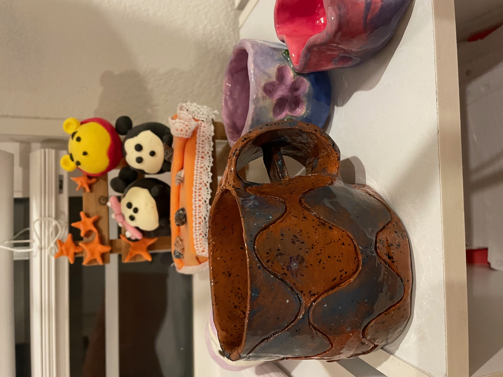 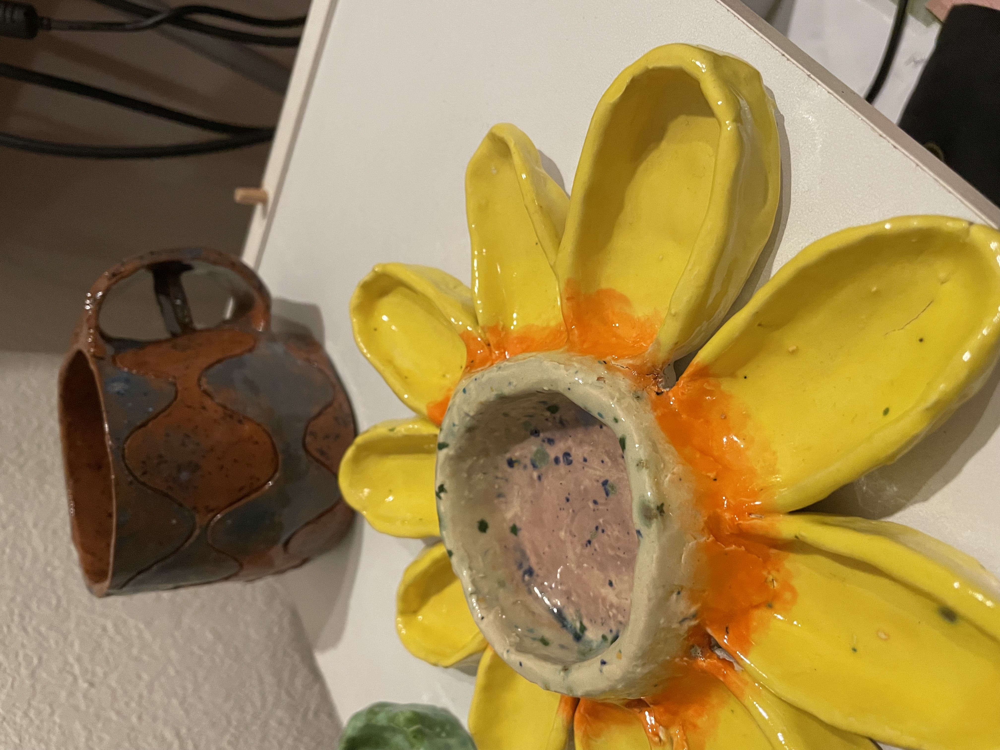 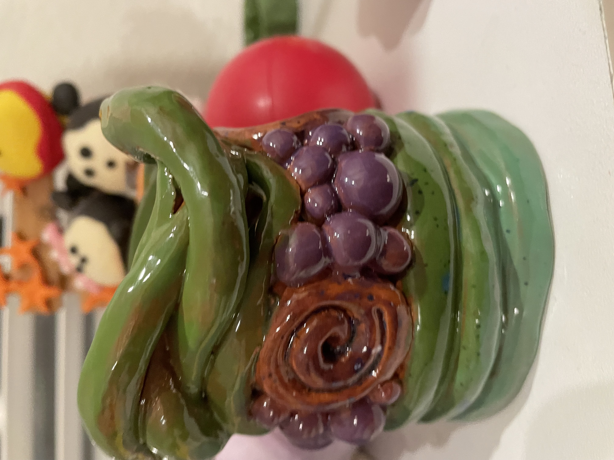here are the capybaras i made yay
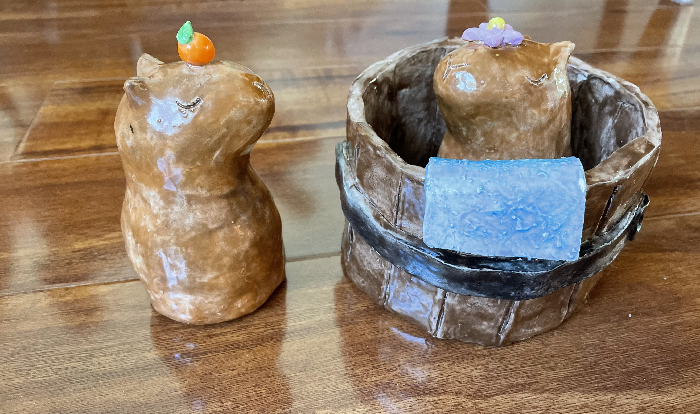
i like cats. i feed three stray cats :) here is one we affectionately named "flower cat"
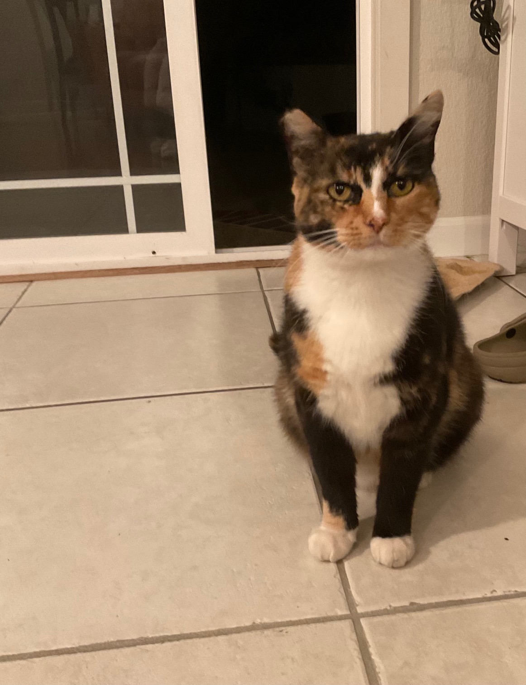i also like food. for your pleasure here's a fruit crepe and a totoro-themed bakery in boston called japonaise bakery
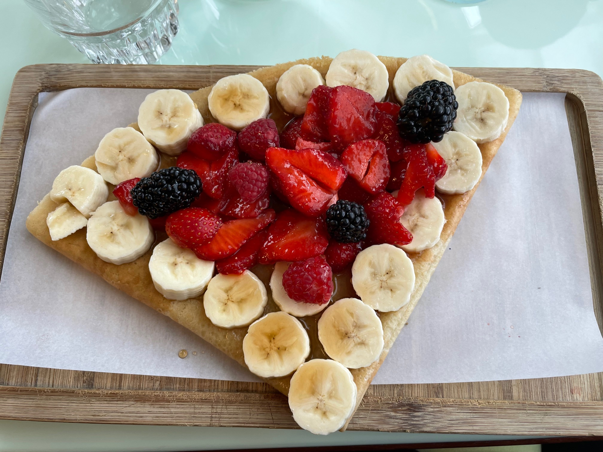 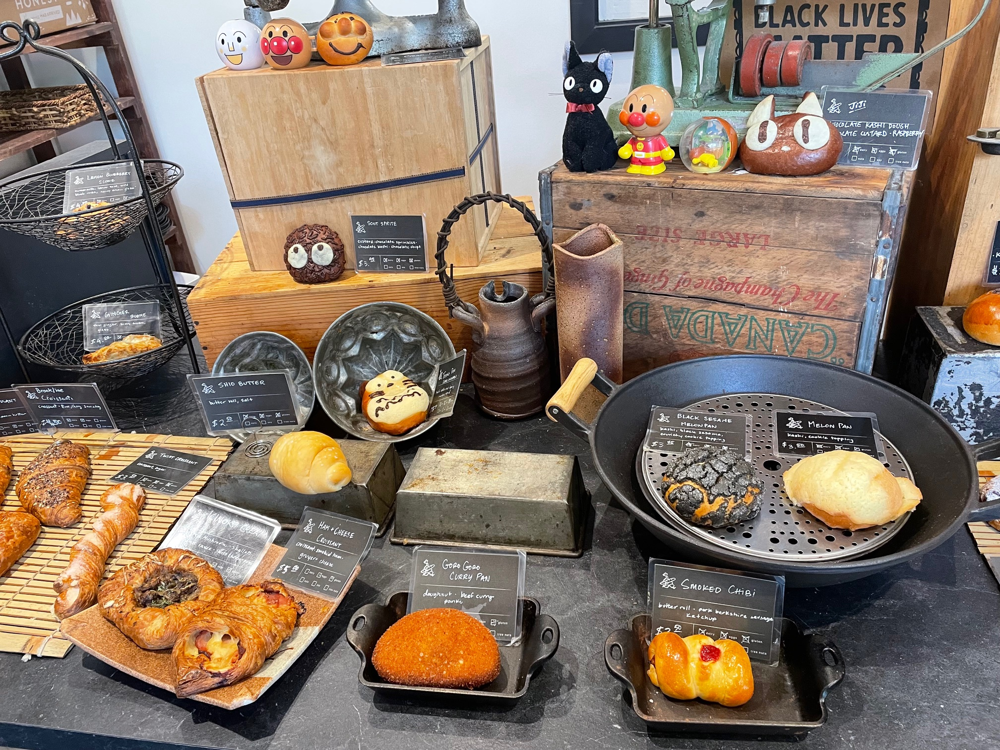finally i like flowers and nature. here are some pretty pictures i took from ireland
 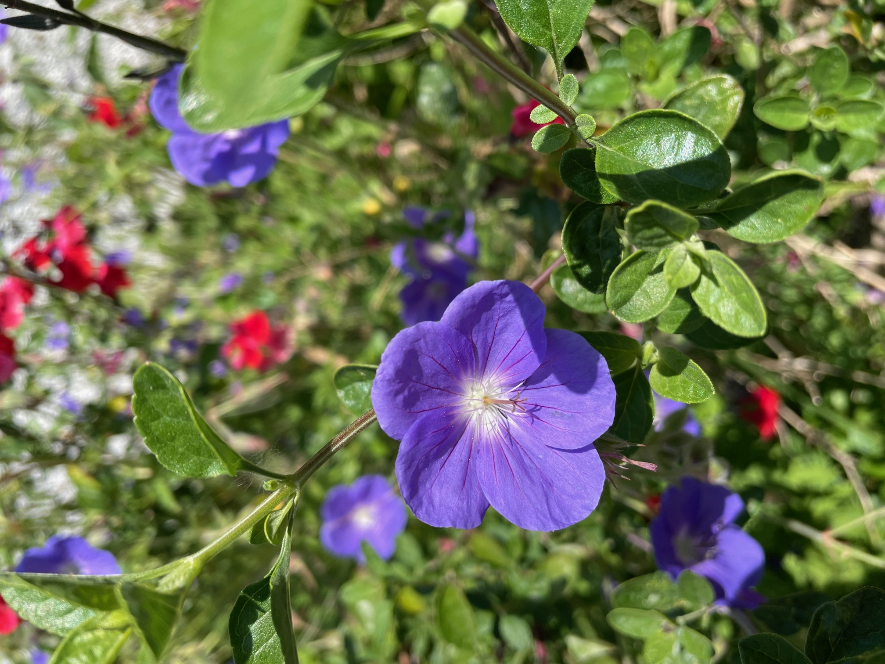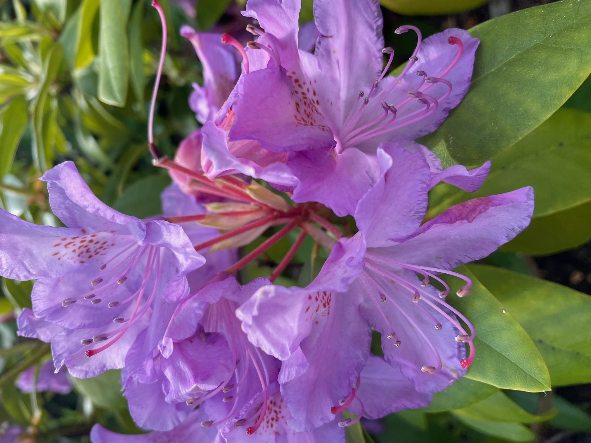
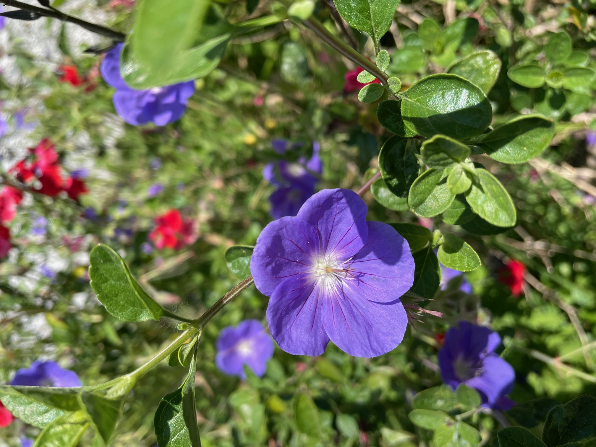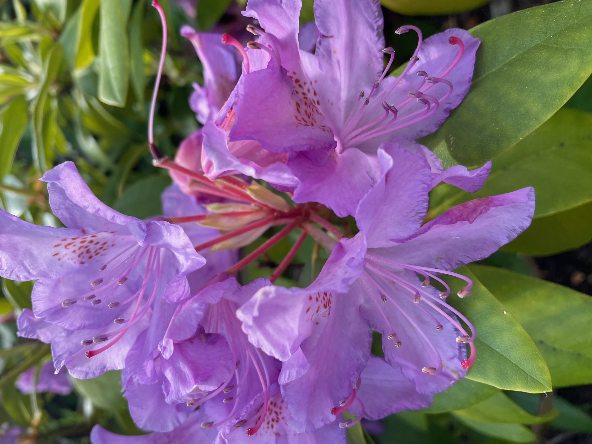
bucketlist
- rock climbing / hiking (which i already like)
- cooking/baking
- driving
- webdev
- modular origami
- cross stitching / embroidery
- cubing
- getting into video games?
- geek out in geography / trivia / history
- traveling to more parts of the world
- liking running (hard)
for all the interests i have that have not come to fruition
abandoned hobbies
i had a phase of crocheting. maybe i should pick that up again but i'm not the most deft. the hooks and yarn are still sitting untouched.
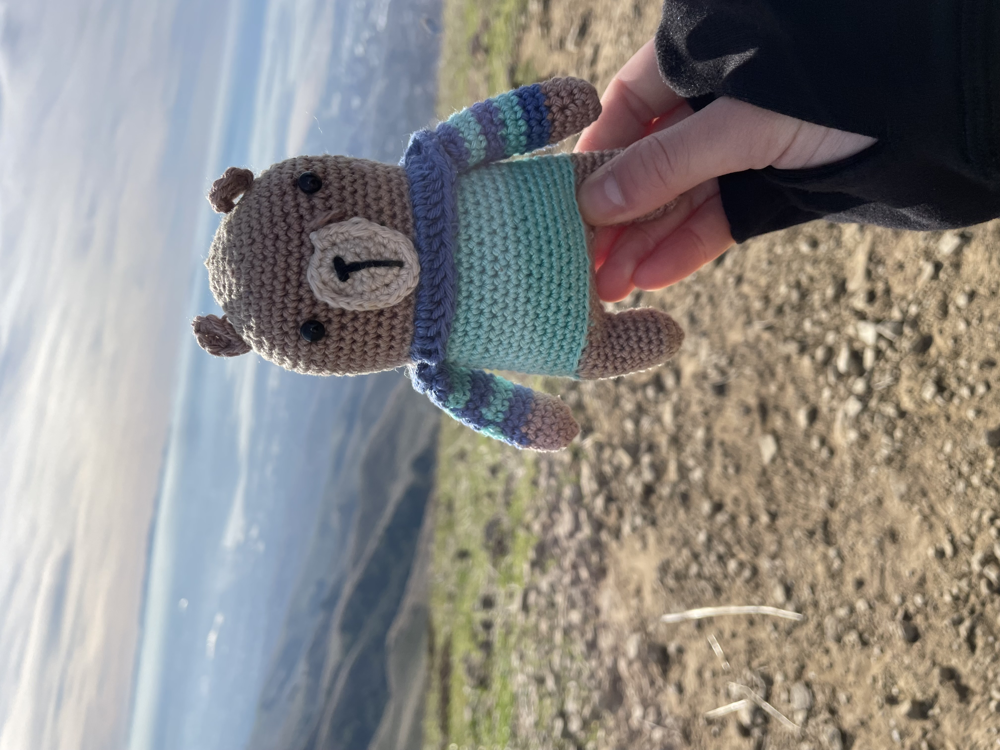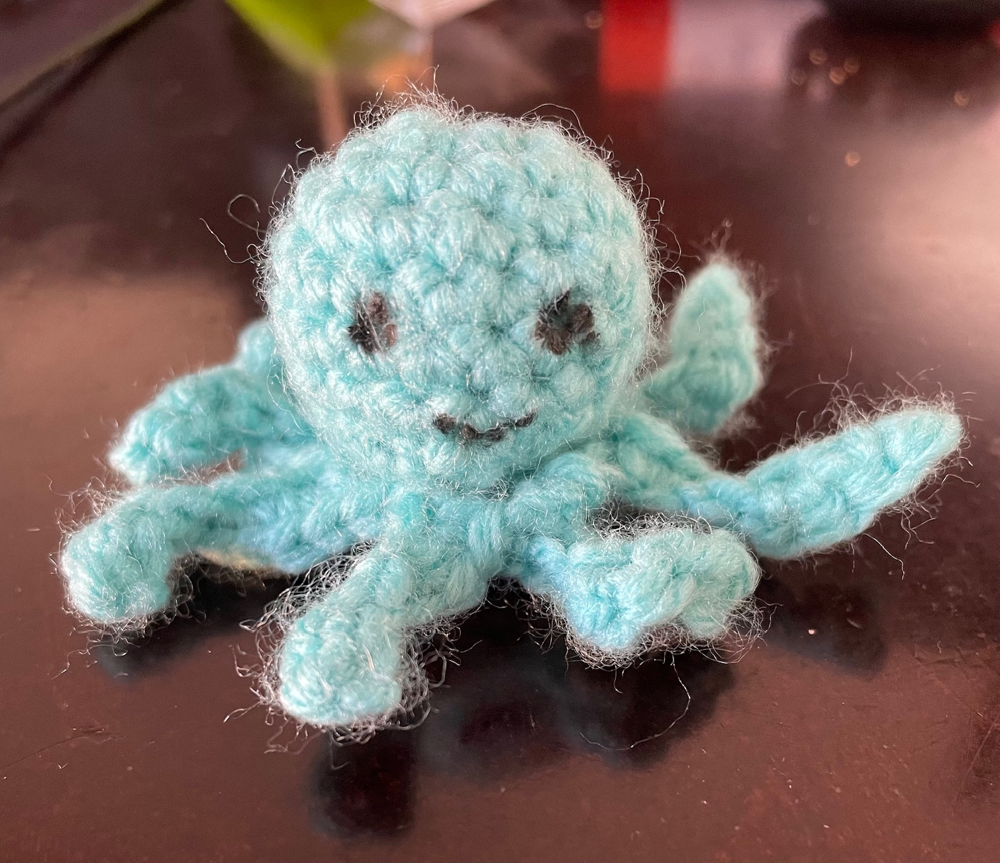- i used to actually take art somewhat seriously.
- i used to play piano. i did not like it which is why i stopped. but i think piano is very beautiful and people who can play are so talented.
- i used to dance competitively. i hope i can get back into it someday!
- i used to swim.